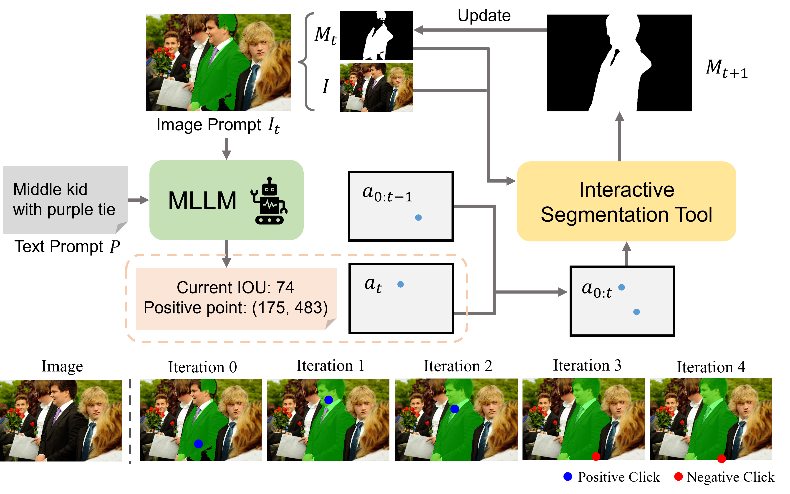
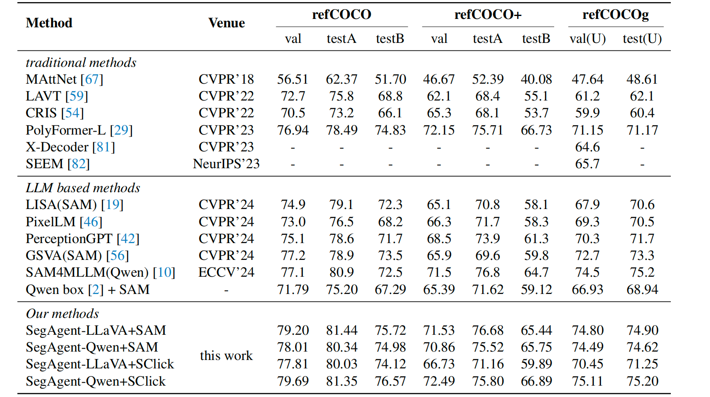
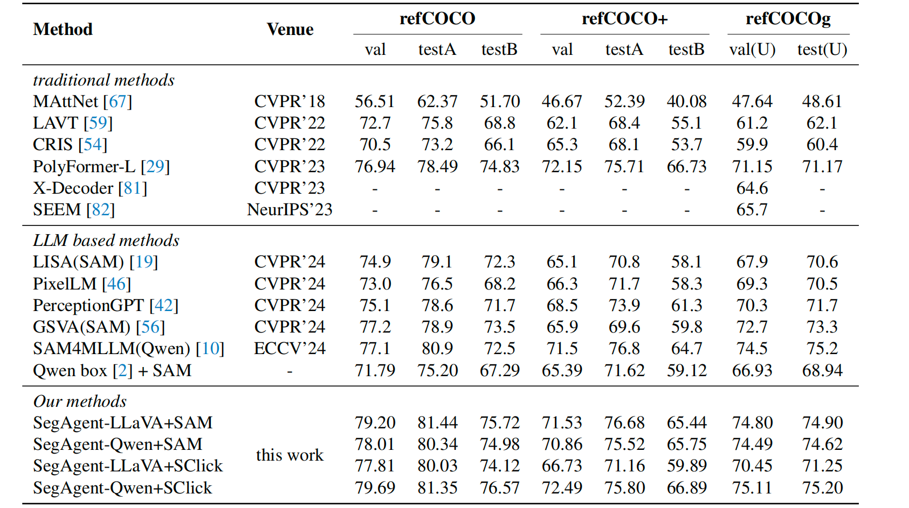

🎯 SegAgent: Exploring Pixel Understanding Capabilities in MLLMs by Imitating Human Annotator Trajectories
CVPR 2025
Muzhi Zhu1,2, Yuzhuo Tian1, Hao Chen1*, Chunluan Zhou2, Qingpei Guo2*, Yang Liu1, Ming Yang2, Chunhua Shen1*
1Zhejiang University 2Ant Group
* Corresponding authors
Abstract
While MLLMs have demonstrated adequate image understanding capabilities, they still struggle with pixel-level comprehension. We propose the Human-Like Mask Annotation Task (HLMAT), enabling MLLMs to mimic human annotators through interactive segmentation tools. SegAgent, fine-tuned on generated annotation trajectories, demonstrates strong segmentation and refinement capabilities without additional architecture changes or implicit tokens. HLMAT provides a robust protocol for assessing pixel-level visual understanding and enhances multi-step visual reasoning capabilities in MLLMs.

Methodology
SegAgent trains MLLMs using annotation trajectories simulated from interactive segmentation tools. To enhance performance, we implement a StaR-based policy improvement (StaR+) and integrate Process Reward Modeling (PRM) with heuristic greedy search to improve segmentation robustness.
Datasets and Evaluation
We evaluate SegAgent on standard segmentation benchmarks (refCOCO, refCOCO+, refCOCOg) and introduce a new High-quality Referring Expression Segmentation (HRES) dataset, which includes challenging annotations requiring more precise and multi-step segmentation.
 

Citation
@article{zhu2025segagent,
title={SegAgent: Exploring Pixel Understanding Capabilities in MLLMs by Imitating Human Annotator Trajectories},
author={Zhu, Muzhi and Tian, Yuzhuo and Chen, Hao and Zhou, Chunluan and Guo, Qingpei and Liu, Yang and Yang, Ming and Shen, Chunhua},
journal={arXiv preprint arXiv:2503.08625},
year={2025},
url={https://arxiv.org/abs/2503.08625}
}